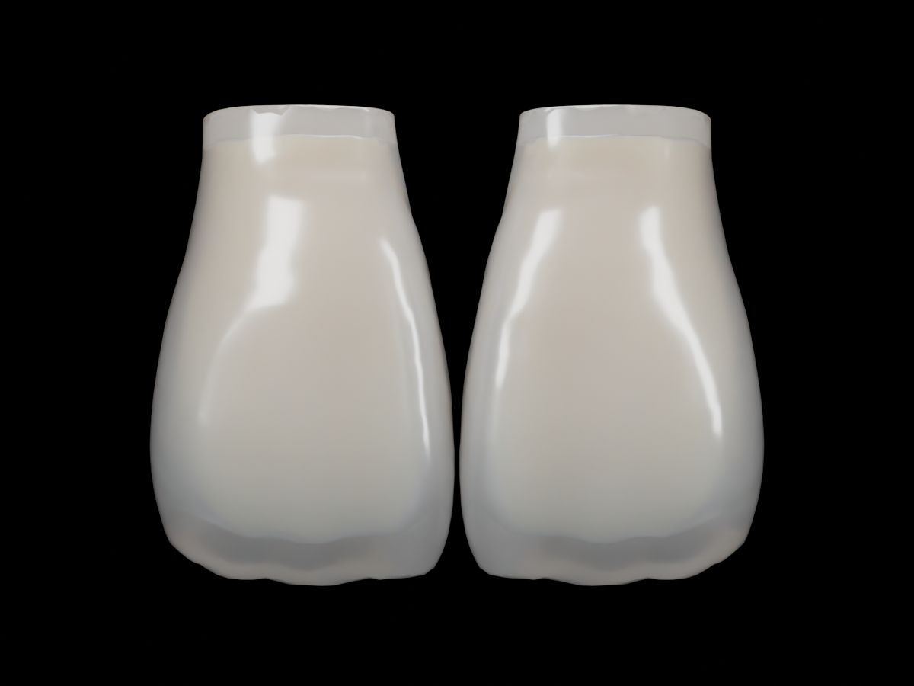

WebGL Cycles모델 불러오는 중…
드래그로 회전, 휠·핀치로 확대, 오른쪽 드래그로 이동. 정면 보기는 Cycles 카메라와 같은 정사영 구도(가로 19 mm)입니다.
teeth-11-21.blend 메시 · 분석적 에나멜·덴틴 광학 모델

WebGL Cycles드래그로 회전, 휠·핀치로 확대, 오른쪽 드래그로 이동. 정면 보기는 Cycles 카메라와 같은 정사영 구도(가로 19 mm)입니다.